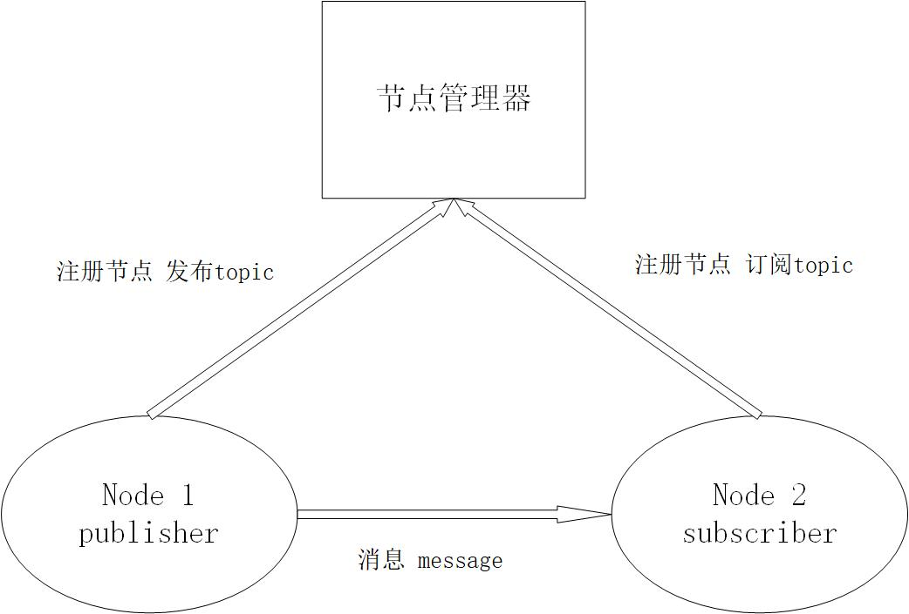
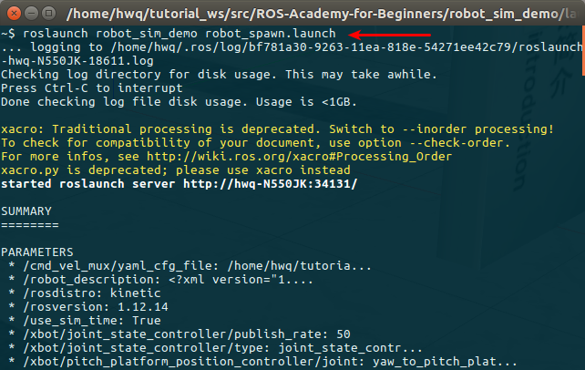
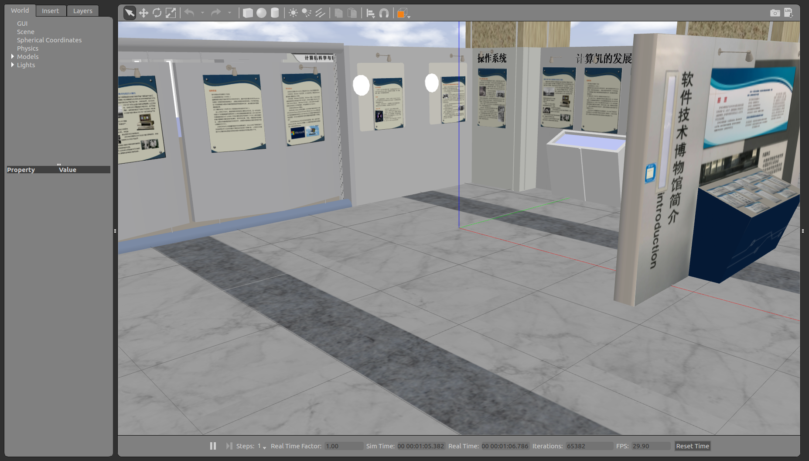
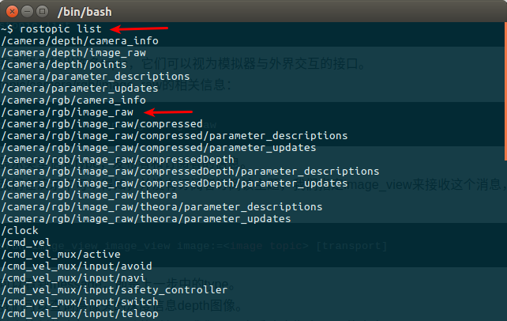
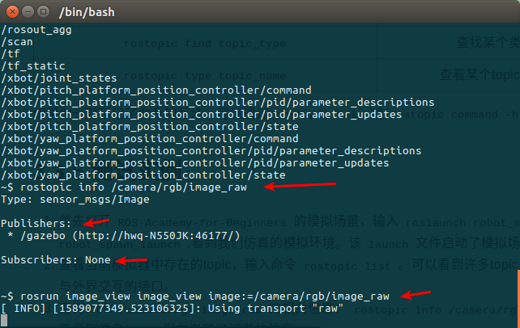
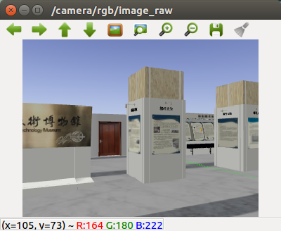

topic通信方式
ROS的通信方式是ROS最为核心的概念，ROS系统的精髓就在于它提供的通信架构。ROS的通信方式有以下四种：
- Topic 主题
- Service 服务
- Parameter Service 参数服务器
- Actionlib 动作库
一、topic简介
ROS中的通信方式中，topic是常用的一种。对于实时性、周期性的消息，使用topic来传输是最佳的选择。topic是一种点对点的单向通信方式，这里的“点”指的是node，也就是说node之间可以通过topic方式来传递信息。
Topic是ROS里一种单向的异步通信的模型。一般是节点间分工明确，有的节点只负责发送，有的节点只负责接收处理。对于绝大多数的机器人应用场景，比如传感器数据收发，速度控制指令的收发，Topic模型是最适合的通信方式。
topic要经历下面几步的初始化过程：首先，publisher节点和subscriber节点都要到节点管理器进行注册，然后publisher会发布topic，subscriber在master的指挥下会订阅该topic，从而建立起sub-pub之间的通信。注意整个过程是单向的。其结构示意图如下： 
Subscriber接收消息会进行处理，一般这个过程叫做回调(Callback)。所谓回调就是指提前定义好了一个处理函数（写在代码中），当有消息来就会触发这个处理函数，此函数会对消息进行处理。
上图就是ROS的topic通信方式的流程示意图。topic通信属于一种异步的通信方式。下面我们通过一个示例来了解下如何使用topic通信。
二、topic通信示例
参考下图，我们以摄像头画面的发布、处理、显示为例,讲讲topic通信的流程。在机器人上的摄像头拍摄程序是一个node（圆圈表示,我们记作node1），当node1注册、运行、启动之后，它作为一个Publisher就开始发布topic。比如它发布了一个topic（方框表示），叫做/camera_rgb，是rgb颜色信息，即采集到的彩色图像。同时，node2假如是图像处理程序,它作为一个subscriber订阅了/camera_rgb这个topic，经过节点管理器的介绍，它就能建立和摄像头节点（node1）的连接。
那么怎么样来理解“异步”这个概念呢？在node1每发布一次消息之后，就会继续执行下一个动作，至于消息发出去之后是什么状态、被怎样处理，它不需要了解；而对于node2图像处理程序，它只管接收和处理/camera_rgb上的消息，至于是谁发来的，它不会关心。所以node1、node2两者都是各司其责，不存在协同工作，我们称这样的通信方式是异步的。

ROS是一种分布式的架构，同一个topic可以有多个节点同时发布，也可以同时被多个节点接收。比如在这个场景中，用户可以再加入一个图像显示的节点，我们还想看看摄像头节点的实时画面，则可以用自己的笔记本连接到机器人上的节点管理器，然后在自己的电脑上启动图像显示节点。
这就体现了分布式系统通信的好处：扩展性好、软件复用率高。
总结：
- topic通信方式是异步的，发送时调用publish()方法，发送完成立即返回，不用等待反馈。
- subscriber通过回调函数的方式来处理消息。
- topic可以同时有多个subscribers，也可以同时有多个publishers。ROS中这样的例子有：/rosout、/tf等等。
三、topic操作命令
在实际应用中，我们应该熟悉topic的几种使用命令，下表详细的列出了各自的命令及其作用。
| 命令 | 作用 |
|---|---|
| rostopic list | 列出当前所有的topic |
| rostopic info topic_name | 显示某个topic的属性信息 |
| rostopic echo topic_name | 显示某个topic的内容 |
| rostopic pub topic_name ... | 向某个topic发布内容 |
| rostopic bw topic_name | 查看某个topic的带宽 |
| rostopic hz topic_name | 查看某个topic的频率 |
| rostopic find topic_type | 查找某个类型的topic |
| rostopic type topic_name | 查看某个topic的类型(msg) |
如果你一时忘记了命令的写法，可以通过rostopic help或rostopic command -h查看具体用法。
四、topic测试示例
- 首先打开ROS-Academy-for-Beginners的模拟场景，输入
看到我们仿真的模拟环境。该launch文件启动了模拟场景、机器人。 如图所示：  roslaunch robot_sim_demo robot_spawn_launch - 查看当前模拟器中存在的topic，输入命令
可以看到终端输出许多topic，它们可以视为模拟器与外界交互的接口。 如图所示： rostopic list - 查询topic ： /camera/rgb/image_raw 的相关信息：
则会显示类型信息type，发布者和订阅者的信息。 如图所示： rostopic info /camera/rgb/image_raw - 上步我们在演示中可以得知，并没有订阅者订阅该主题，我们指定image_view来接收这个消息，运行命令
我们可以看到message，即是上一步中的type，并弹出一个图像窗口 如图所示： rosrun image_view image_view image:=/camera/rgb/image_raw - 同理我们可以查询摄像头的深度信息depth图像。
- 在用键盘控制仿真机器人运动的时候，我们可以查看速度指令topic的内容rostopic echo /cmd_vel ，可以看到窗口显示的各种坐标参数在不断的变化。
通过这些实例的测试，帮助我们更快的掌握topic各种操作命令的使用，以及对topic通信的理解。